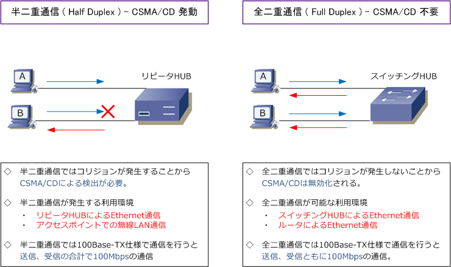
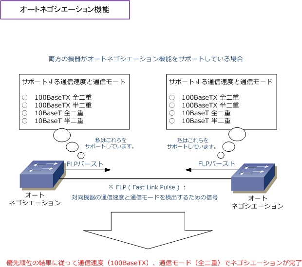
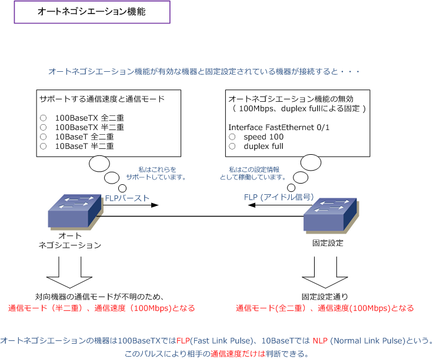

Ethernet LAN - Full Duplex / Half Duplex
全二重通信 / 半二重通信
全二重通信 ( full duplex ) とは、データの送信と受信を双方から同時に行える通信方式です。そして、 半二重通信 ( half duplex ) とは、データの送信と受信を同時に行えず、時間を区切って片方向からの 送信しかできない通信方式。つまり、全二重通信は、半二重の2倍の帯域幅を利用することが可能です。

※ CatalystスイッチのF0/1ポートでの設定例：固定の通信速度(100Mbps)、固定の通信モード(全二重)
Catalyst(config)# interface FastEthernet 0/1 Catalyst(config-if)# speed 100 Catalyst(config-if)# duplex full
オートネゴシエーション機能
イーサネットLANでは機器同士で通信速度（10 or 100）や通信モード（全二重 or 半二重）を合わせて いなければ通信が不安定になります。 IEEE802.3uにより標準化されたオートネゴシエーション機能では 通信速度と通信モードを自動的に最適化します。オートネゴシエーション機能は、機器間でFLPバースト という信号を交換することで相手の通信速度と通信モードを検出して、以下の優先順位に従い決定します。
?@ 100BaseTXの全二重 ⇒ ?A 100BaseTXの半二重 ⇒ ?B 10BaseTの全二重 ⇒ ?C 10BaseTの半二重
正確な検出順位 ⇒ ?@1000BaseT/Full duplex ?A1000BaseT/Half duplex ?B100BaseT2/Full duplex ?C100BaseTX/Full duplex ?D100BaseT2/Half duplex ?E100BaseT4 ?F100BaseTX/Half duplex ?G10BaseT/Full duplex ?H10BaseT/Half duplex です。

※ CatalystスイッチのF0/1ポートでの設定例 ： 通信速度、通信モードともにオートネゴシエーション状態
Catalyst(config)# interface FastEthernet 0/1 Catalyst(config-if)# speed auto Catalyst(config-if)# duplex auto
オートネゴシエーション機能のトラブル
オートネゴシエーション機能は、両方の機器がオートネゴシエーション機能をサポートしている場合は、 便利な機能ですが、対向機器がオートネゴシエーション機能をサポートしていない場合や（先ずないが） 対向機器がオートネゴシエーション機能を無効にしている場合（つまり、固定設定している）においては オートネゴシエーションが失敗してしまいます。つまり、以下のとおり通信モードの不一致が発生します。

上図のように、通信モードの不一致（一方が全二重通信、もう一方の機器が半二重通信）が発生した場合、 データトラフィックの送受信なら半二重通信でも「遅いな」で済みますが、ボイストラフィックの送受信 の場合には、半二重通信では「音声品質がボロボロ」となるので、絶対に行ってはいけません。間違って 半二重通信としてしまったことで障害報告書を書かされたネットワークエンジニアは多くいると思います。